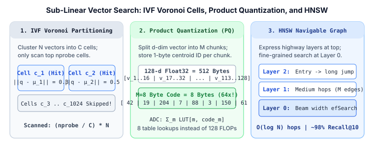

Search, Ranking & Retrieval · Dense Retrieval & ANN Indexing · Chapter 2
2. Approximate Nearest Neighbors: IVF, Product Quantization (PQ) & HNSW Graphs
Once a Two-Tower Bi-Encoder encodes $N = 100{,}000{,}000$ documents into $768$-dimensional float32 vectors, storing those raw vectors requires $307\text{ GB}$ of RAM, and an exact linear scan takes seconds per query. Approximate Nearest Neighbor (ANN) indexes trade a tiny fraction of recall (e.g., $98\%$ Recall@10 instead of $100\%$) for $100\times$ faster latency and $32\times$–$64\times$ lower memory. This chapter explains the three core building blocks of modern vector databases (FAISS, Milvus, Qdrant, Vespa): IVF, Product Quantization (PQ), and HNSW.

1. Inverted File Index (IVF): Voronoi Partitioning
Instead of comparing the query vector $q \in \mathbb{R}^d$ against all $N$ document vectors, an Inverted File Index (IVF) runs $k$-means clustering offline to partition the vector space into $C$ Voronoi cells (typically $C \approx \sqrt{N}$, e.g., $C = 4{,}096$ for $N = 16\text{M}$), each represented by a centroid $\mu_c \in \mathbb{R}^d$.
- Indexing: Each document vector $v_i$ is assigned to its closest centroid $c^* = \arg\min_c \|v_i - \mu_c\|_2$ and appended to that cell's inverted list.
- Querying: Given query $q$, we first compute distances to all $C$ centroids, pick the closest $\text{nprobe}$ cells (e.g., $\text{nprobe} = 32$), and only scan vectors inside those $\text{nprobe}$ lists.
If vectors are evenly distributed across cells, IVF reduces the number of distance evaluations from $N$ down to:
$$\text{Evaluations}_{\text{IVF}} = C + \frac{\text{nprobe}}{C} \cdot N$$2. Product Quantization (PQ): $64\times$ Memory Compression & Fast LUTs
Even with IVF, holding $100\text{M}$ uncompressed $128$-d float32 vectors takes $100\text{M} \times 128 \times 4\text{ bytes} = 51.2\text{ GB}$. Standard $k$-means quantization (replacing the whole vector with one centroid ID) fails because achieving fine precision in $128$ dimensions would require trillions of centroids.
Product Quantization (PQ) (Jégou et al., 2011) splits each $d$-dimensional vector $v$ into $M$ disjoint sub-vectors of dimension $d^* = d / M$:
$$v = \big[\, v^{(1)} \;\big|\; v^{(2)} \;\big|\; \dots \;\big|\; v^{(M)} \,\big], \qquad v^{(m)} \in \mathbb{R}^{d/M}$$For each subspace $m \in \{1, \dots, M\}$, we run a separate $k$-means with $K = 256$ centroids $\{c_{m, 0}, \dots, c_{m, 255}\}$. Because $\log_2(256) = 8\text{ bits} = 1\text{ byte}$, each sub-vector $v^{(m)}$ is replaced by its 1-byte centroid index $q_m(v) \in \{0, \dots, 255\}$.
- A $128$-d float32 vector ($512\text{ bytes}$) split into $M = 8$ subspaces of $16$ floats becomes an $8$-byte PQ code—a $64\times$ compression ratio, while implicitly representing $256^8 = 1.84 \times 10^{19}$ possible Cartesian-product centroids!
Asymmetric Distance Computation (ADC)
At query time, we keep the query $q$ uncompressed and precompute an $M \times 256$ Distance Lookup Table (LUT) storing the squared distance between each query chunk $q^{(m)}$ and all $256$ centroids in subspace $m$:
$$\text{LUT}[m, k] = \big\| q^{(m)} - c_{m, k} \big\|_2^2$$Once the $M \times 256$ table is built, approximating the squared distance to any compressed document vector requires just $M$ table lookups and additions—no floating-point multiplications:
$$\hat{d}(q, v)^2 = \sum_{m=1}^{M} \text{LUT}\big[m,\, \text{code}_m(v)\big]$$In IVF-PQ, we quantize the residual $r_i = v_i - \mu_c$ (the offset from the vector's coarse IVF centroid) rather than $v_i$ directly, which significantly lowers quantization error.
3. HNSW: Hierarchical Navigable Small World Graphs
When RAM is plentiful and sub-5ms latency at $>98\%$ Recall@10 is required, HNSW (Malkov & Yashunin, 2018) is the industry standard. HNSW combines two ideas:
- Navigable Small World (NSW) proximity graphs: Every vector is a node connected to up to $M$ nearest neighbors plus a few long-range edges so greedy routing ("move to the neighbor closest to $q$") reaches the target region in $O(\log N)$ hops.
- Hierarchical Skip-List Layers: HNSW stacks layers $L, L-1, \dots, 0$. Every vector lives in Layer $0$, and each vector is promoted to higher layers with exponentially decaying probability $P(\text{level} \ge \ell) = e^{-\ell / m_L}$.
Search starts at the top layer $L$ (which has only a handful of nodes and long-range highway edges), greedily walks to the local minimum with beam width $1$, drops down to the next layer at that node, and finally performs a wider beam search with queue size efSearch at Layer $0$.
4. Worked Numerical Comparison: Flat vs. IVF vs. PQ vs. HNSW
Suppose we index $N = 10{,}000{,}000$ vectors of dimension $d = 128$ (float32 = $512$ bytes/vector). Let us compare memory footprint and per-query work across all four index designs:
| Index Type | Key Parameters | Vector RAM ($10\text{M}$ docs) | Per-Query Operations | Typical Recall@10 |
|---|---|---|---|---|
| Flat (Exact Scan) | None | $10\text{M} \times 512\text{ B} = \mathbf{5.12\text{ GB}}$ | $10{,}000{,}000$ dot products ($128$-d) | $100.0\%$ |
| IVF4096, Flat | $C=4096,\; \text{nprobe}=32$ | $\mathbf{5.12\text{ GB}}$ | $4096 + \frac{32}{4096}(10\text{M}) = \mathbf{82{,}221}$ dot products | $\sim 95.5\%$ |
| IVF4096, PQ16 | $C=4096,\; M=16,\; \text{nprobe}=32$ | $10\text{M} \times 16\text{ B} = \mathbf{160\text{ MB}}$ ($32\times$ smaller) | $4096$ dots $+$ $78{,}125 \times 16$ LUT adds | $\sim 88.0\%$ (or $96\%$ w/ re-rank) |
| HNSW32 | $M=32,\; \text{efSearch}=64$ | $5.12\text{ GB} + 2.6\text{ GB graph} = \mathbf{7.7\text{ GB}}$ | $\sim \mathbf{1{,}500\text{–}3{,}000}$ dot products | $\sim \mathbf{98.5\%}$ |
5. Minimal NumPy Implementation of Product Quantization (ADC)
import numpy as np
class SimpleProductQuantizer:
def __init__(self, d: int = 128, M: int = 8, K: int = 256):
self.d, self.M, self.K = d, M, K
self.d_sub = d // M
# Codebooks shape: [M, K, d_sub]
self.codebooks = np.zeros((M, K, self.d_sub), dtype=np.float32)
def encode(self, vectors: np.ndarray) -> np.ndarray:
"""Compress [N, d] float32 vectors into [N, M] uint8 codes."""
N = vectors.shape[0]
codes = np.empty((N, self.M), dtype=np.uint8)
for m in range(self.M):
sub_v = vectors[:, m * self.d_sub : (m + 1) * self.d_sub] # [N, d_sub]
# Assign each sub-vector to nearest centroid in subspace m
dists = np.linalg.norm(sub_v[:, None, :] - self.codebooks[m][None, :, :], axis=-1)
codes[:, m] = np.argmin(dists, axis=1).astype(np.uint8)
return codes
def adc_search(self, query: np.ndarray, codes: np.ndarray, top_k: int = 5) -> np.ndarray:
"""Asymmetric Distance Computation using M x K Lookup Table."""
# 1. Build [M, K] squared distance lookup table
lut = np.empty((self.M, self.K), dtype=np.float32)
for m in range(self.M):
q_sub = query[m * self.d_sub : (m + 1) * self.d_sub]
lut[m] = np.sum((self.codebooks[m] - q_sub) ** 2, axis=-1)
# 2. Sum LUT entries for each document's M byte codes: O(N * M) table lookups
approx_sq_dists = sum(lut[m, codes[:, m]] for m in range(self.M))
return np.argsort(approx_sq_dists)[:top_k]
# Demo with random initialized codebooks
pq = SimpleProductQuantizer(d=32, M=4, K=16)
pq.codebooks = np.random.randn(4, 16, 8).astype(np.float32)
docs = np.random.randn(1000, 32).astype(np.float32)
codes = pq.encode(docs)
print("Compressed shape:", codes.shape, "| Top-5 IDs:", pq.adc_search(docs[0], codes))